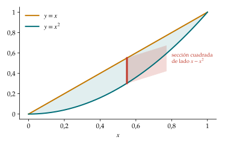

Para arrancarUn pan tajado: el volumen es la suma de las tajadas. Si conoces el área de cada sección, integras y tienes el volumen, aunque el sólido sea raro.
12.1 El método de las rebanadas
Imaginemos un sólido que se extiende entre los planos x=a y x=b, y supongamos que conocemos el área A(x) de su sección transversal por el plano perpendicular al eje x en cada punto x. Si cortamos el sólido en rebanadas delgadas de grosor Δx, cada una es casi un «cilindro» (no necesariamente circular) de volumen A(xk∗)Δx. Sumando y pasando al límite:
Una pirámide tiene base cuadrada de lado L y altura h. Halla su volumen.
Soluciónintenta primero
Midiendo x desde el vértice hacia la base, por semejanza la sección a distancia x es un cuadrado de lado hLx. Así V=∫0hh2L2x2dx=3L2h=31(aˊrea de la base)(altura). Por Cavalieri, la fórmula vale para cualquier pirámide o cono con la misma base y la misma altura.
Ejemplo 12.4· Secciones cuadradas sobre un círculo
La base de un sólido es el disco x2+y2≤r2, y sus secciones perpendiculares al eje x son cuadrados. Halla su volumen.
Soluciónintenta primero
En x el cuadrado tiene lado 2r2−x2, área 4(r2−x2): V=∫−rr4(r2−x2)dx=4(2r3−32r3)=316r3.
3D · gírelaSólidos con secciones conocidas
Escoge la forma de la sección y la base; mueve la rebanada destacada.
Arquímedes observó que la sección de la semiesfera a altura x, π(r2−x2), más la sección de un cono de vértice en el centro, πx2, es igual a la sección del cilindro, πr2. Por Cavalieri, semiesfera + cono = cilindro, de modo que la semiesfera es πr3−31πr3=32πr3. Estaba tan orgulloso de la razón 2:3 entre la esfera y el cilindro que pidió que en su tumba se grabara una esfera inscrita en un cilindro.
De un cilindro circular de radio r se corta una cuña con dos planos: uno perpendicular al eje y otro que forma un ángulo de 45∘ con el primero y lo corta en un diámetro. Halla el volumen de la cuña.
Soluciónintenta primero
Tomando el diámetro sobre el eje x, la sección perpendicular a él en x es un triángulo rectángulo isósceles de catetos r2−x2, de área 21(r2−x2): V=∫−rr21(r2−x2)dx=32r3. ¡Sin π!
🔎 Profundiza: un sólido con secciones cuadradas
La base de un sólido es la región entre y=x y y=x2, y cada sección perpendicular al eje x es un cuadrado. El lado del cuadrado en la abscisa x es la distancia vertical entre las curvas: x−x2.

La base vista desde arriba y una de las secciones cuadradas, levantada perpendicularmente.